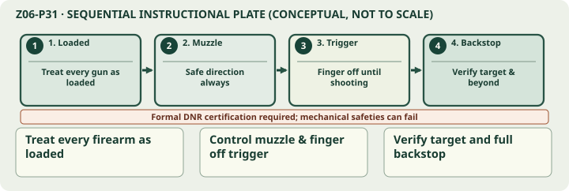

Z06-P31 · Hunting and fishing · New manuscript
Four Fundamental Firearm Safety Rules and Certification Gate
Enforce the four non-negotiable firearm safety rules and statutory hunter-education certification before any firearm handling.
When it applies · All lawful firearm transport, range practice, and afield hunting.
Equipment · Certified firearm safety completion certificate, chamber flag, ear and eye protection.

Actions
- Apply all four rules simultaneously at every moment: treat every firearm as loaded, keep the muzzle pointed in a safe direction, keep your finger outside the trigger guard until ready to shoot, and positively identify your target and everything beyond it.[H03]
- Complete formal Minnesota DNR Firearms Safety Certification as required by statute; written reference cards never replace hands-on certified training.[H03]
- Never rely on a mechanical safety switch as a substitute for safe muzzle direction and an unloaded, open action during crossing obstacles or transport.[H03]
Failure recognition · Violating even a single rule—such as resting a finger on the trigger, crossing a fence loaded, or shooting toward brush without verifying the backstop—causes fatal gunshot injuries.[H03]
Verify · Every handler demonstrates continuous muzzle control, finger off trigger, open unloaded action when not hunting, and certified training status.[H03]
Stop or change course · Stop afield firearm activity immediately if anyone shows unsafe muzzle control, fatigue, alcohol/impairment, or poor visibility.[H03]
Evidence and editorial notes
- H03 · Minnesota DNR · Firearms Safety Certification and Hunter Education (Current web edition)
- Section: Four fundamental firearm safety rules and certification · Conditions: Any firearm handling, transport, or field carry
Support: Treat every firearm as loaded, keep the muzzle in a safe direction, keep finger off the trigger until ready to shoot, and verify target and what is beyond it.
Limitations: Certification is required by age/statute in Minnesota; written summaries never substitute for formal certified safety instruction. · Conflicting evidence: None noted.
Editorial note: Mandatory Z06 bounded weapon-safety gate. · Specialist reviewer: Certified hunter-education and firearm safety instructor
Primary source · checked 2026-11-25
Current assessment · A04-H03 (2026-11-25) · Bounded support confirmed from an alternate source (A04): Basic safe handling principles only. No firing instruction, exercise or equipment qualification. Limits: Specialist review PENDING (Certified hunter-education and firearm safety instructor); publication HOLD. All release decisions pending.
Source lineage · New manuscript (Z06 P17 equipment safety) · Classification · New manuscript.